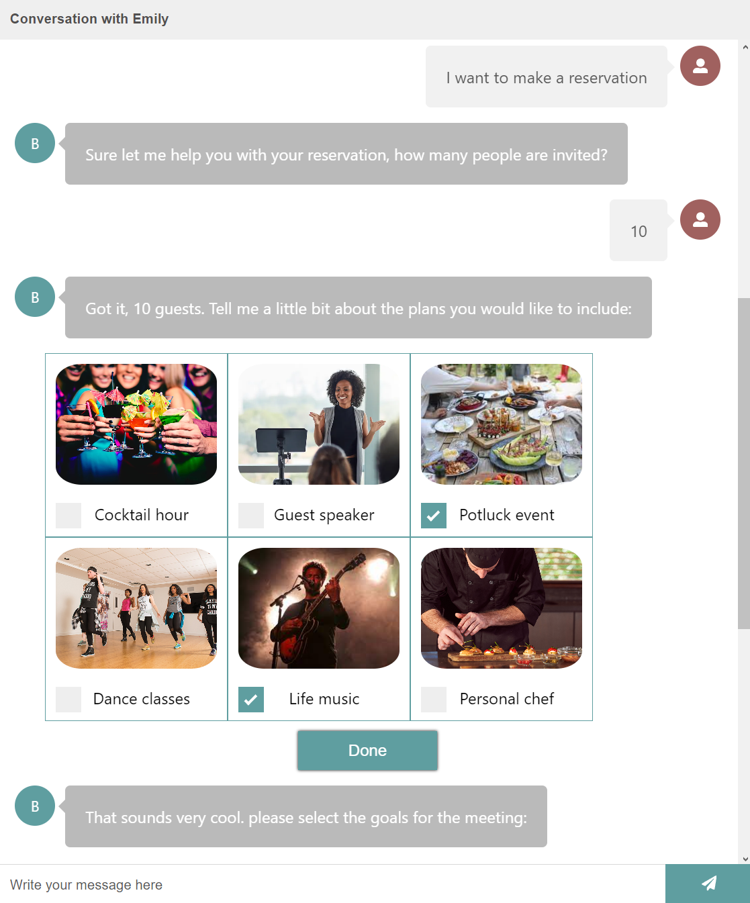

Bot Avatar
Creates a recognizable assistant identity through name and avatar customization.
Frontend Build / Conversational UI
An event-planning chatbot built for an interview challenge. The experience helps users organize corporate events through conversational prompts, visual plan options, and guided event details.

Try It
The chatbot responds to common event-planning prompts and guides users toward a more structured request.
Component Thinking
Creates a recognizable assistant identity through name and avatar customization.
Gives users quick prompt options so the conversation does not begin from a blank page.
Simplifies event scheduling by introducing a familiar date-picking interaction.
Guides users toward the purpose of the event so the assistant can shape better follow-up questions.
Uses visual event-plan options to help users compare choices without dense text.
Keeps the interaction moving through small, answerable steps instead of one long form.